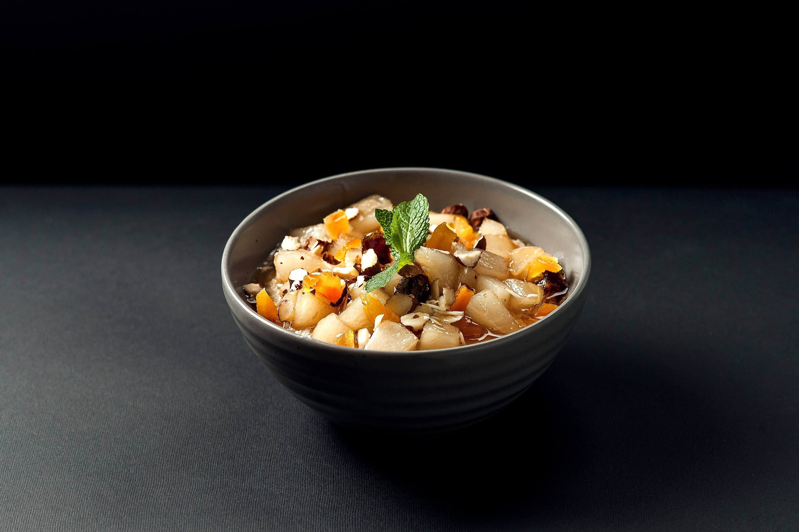

<div class="dish-container">
  <div class="container">
    <div class="row">

      <div class="col-md-6">
        <div class="dish-img" [routerLink]='["oatmeal"]'>
          <p>Вівсянка з карамелізованою грушею - 275г</p>
          
        </div>
      </div>

      <div class="col-md-6">
        <div class="dish-name">
          <p>Вівсянка з карамелізованою грушею - 275г</p>
        </div>
        <div class="dish-price">
          59рн
          <mat-form-field class="example-full-width">
            <input matInput type="number" value="1">
          </mat-form-field>
        </div>
        <div class="storage">
          З корицею, горіхами, фініками і курагою
        </div>
        <div class="nutritional-value">
          Харчова цінність страви (грам):
          білки - <span>10,8</span>; 
          жири - <span>6,3</span>;
          вуглуводи - <span>50,5</span>;
          ккал - <span>299</span>;
        </div>
        <div class="buy-link">
          <a><i class="fa fa-shopping-bag"></i>Замовити</a>
        </div>
      </div>

    </div>
  </div>
</div>